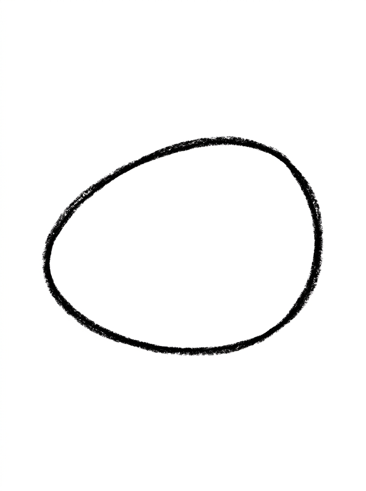
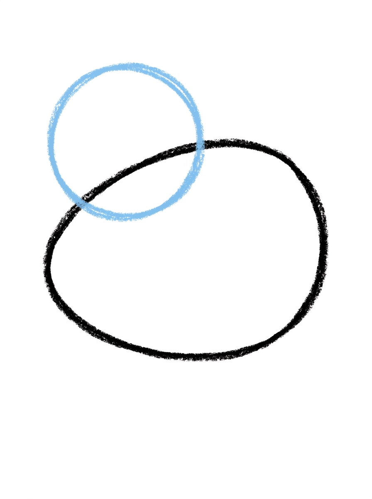
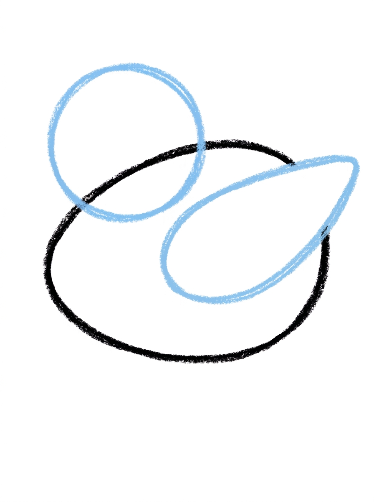
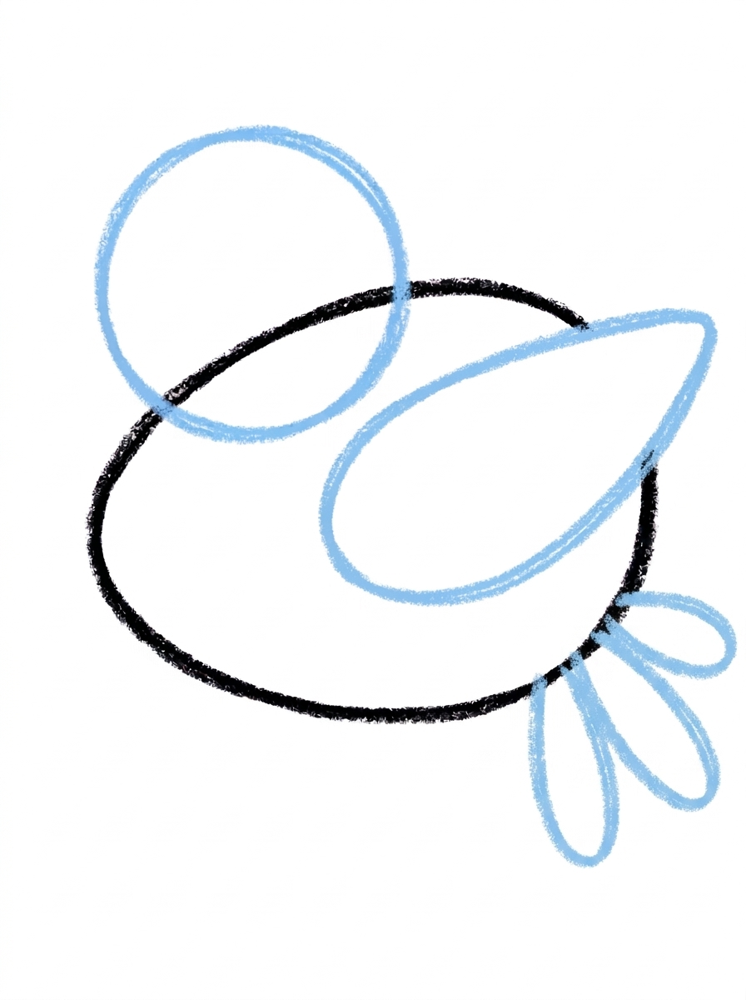
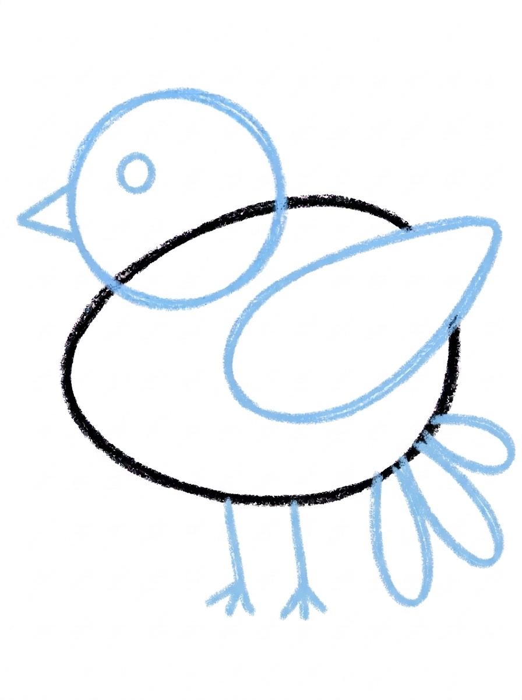
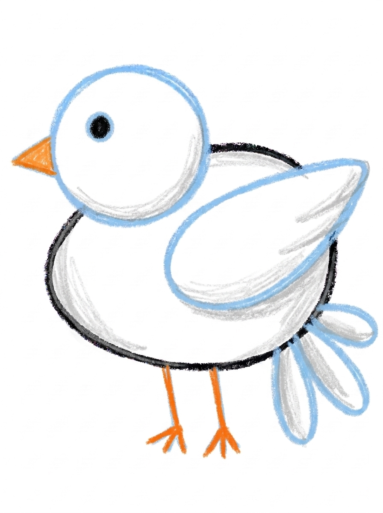

Dove Drawing for Kids How to Draw A Dove in 6 Easy Steps
Quick Answer
Start with a plump oval body, add a circle head, then a pointed-oval wing and three long fanned tail feathers. Finish with a triangle beak, a dot eye and two little legs, then colour the dove white. Made for ages 3 and up — no signup needed, just print and draw.
At a Glance
- Subject: How to draw a dove
- Ages: 3+
- Steps: 6 steps
- Time: ~15 min
- Difficulty: Easy
- Supplies: Paper, crayons
A dove is a lovely first bird to draw because it is built from soft, round shapes a young hand already knows. Kids get a whole gentle bird from one plump oval, one circle and a few simple feather shapes — and the finished dove looks sweet on a card or classroom wall.
✏️ Draw Your Dove in 6 Easy Steps
One step per box — this step by step dove drawing shows each new part in a different color so kids can see exactly what changed.
Step 1: The Body

Draw one plump oval lying on its side in the middle of your paper, a little taller at the back end. This round shape becomes your dove's body.
Step 2: The Head

Draw one medium circle overlapping the top front of the body so the two shapes touch. This is your dove's head.
Step 3: The Wing

Draw one big pointed-oval wing shape on the side of the body, with both ends of the wing touching the body's outline.
Step 4: The Tail

Draw three long rounded feather shapes fanning out from the back end of the body, each one touching the body. Together they make the dove's tail.
Step 5: The Beak, Eye and Legs

Draw one small triangle beak at the front of the head and one round dot eye on the head. Then add two thin short legs hanging from the bottom of the body, with three tiny toe lines at the end of each leg.
Step 6: Color It In

Color your dove! White for the body, head, wing and tail with a little pale gray shading along the lower edges, orange for the beak, black for the eye, and orange for the legs and feet. Great drawing!
📊 Dove Drawing by Age
Every age can join in — just adjust the job.
| Age | What they can do | Tip |
|---|---|---|
| 3-4 | Draw the big body oval and the head circle, and colour the finished dove white. | Draw the wing and tail feathers for them the first time, or let a wobbly wing stand — it still reads as a dove. |
| 4-5 | Add the pointed-oval wing and fan out the three tail feathers on their own. | Count the tail feathers out loud together — three long ones, each touching the body. |
| 6+ | Draw the whole dove start to finish, including the triangle beak, toe lines and pale gray shading. | Challenge them to add a tiny olive branch or a second, smaller dove beside the first. |
🖨️ Download Your Free Dove Drawing Printable
The printable lays out all 6 steps one per box, big enough for little hands — kids draw right alongside each step.
⬇️ Open Free Printable 🖨️ Print🎁 Free printable for ages 3+
🕊️ Peace Card Dove
Turn the finished dove into a card: fold a piece of paper in half, glue or copy the dove onto the front, and write a kind message inside for a friend, teacher or grandparent. Doves stand for peace and kindness, so this drawing makes a thoughtful thank-you or thinking-of-you card that kids can give away the same day they draw it.
What You'll Need to Draw A Dove
You only need paper, a pencil and crayons or markers. Keep white ready for the body, head, wing and tail, pale gray for the soft shading along the lower edges, orange for the beak, legs and feet, and black for the eye. A white crayon on light blue or gray paper makes the dove stand out beautifully if your child wants to try coloured paper.
What They're Learning
This tutorial practices the shapes birds are really made of: a plump oval for the body, a circle for the head, a pointed oval for the wing and a small triangle for the beak. Kids also practice overlapping shapes — the head sits on top of the body — and counting, with three tail feathers and three toe lines on each foot.
Make It Yours
Once the dove is drawn, try it other ways: colour it soft gray or pale blue instead of white, draw it carrying a tiny heart or letter in its beak, add a branch underneath its feet to sit on, or draw a whole row of doves across the top of the page like birds on a wire.
🛒 Our Favorite Drawing Supplies
These are the supplies we reach for in our own home — washable (because kids), quality paper, and enough colors to avoid fights.
As an Amazon Associate, MomYouNeedThis earns from qualifying purchases — at no extra cost to you.
💡 Dove Drawing Tips for Parents
The trickiest moment is Step 3, the wing: both ends of the pointed oval need to touch the body's outline, or the wing looks like it is floating. If your child's wing floats, show them how to start the line right on the body's edge and land it back on the edge.
White birds on white paper can feel invisible to a little artist. Suggest the pale gray shading along the lower edges from Step 6, or let them outline the finished dove in light blue — it keeps the gentle look while making their work easy to see and be proud of.
🕊️ Doves in the Real World
Doves belong to the same bird family as pigeons — the white dove in this drawing and the gray pigeon in the park are close cousins. For thousands of years, people have kept doves as symbols of peace and good news: a dove carrying an olive branch is one of the oldest peace pictures in the world, still used on cards and banners today.
Real doves coo softly, bob their heads as they walk, and mate for life, raising their chicks in pairs. They are gentle birds that have lived alongside people since ancient times — some were even trained to carry messages home across long distances. Ask your child what message their dove is carrying.
✋ Warm-Up: Gentle Teardrops
Doves are teardrop shapes with feathers, so warm up with teardrops: round at one end, pointed at the other, drawn fat and thin and upside down. Add a few long pointed ovals — feather shapes — in a fan. The dove's wing and tail in the tutorial are those same shapes wearing white.
A teardrop that comes out more potato than dove is one curve away from fixed: round out the fat end with a second line and let the first become a feather edge. Doves are soft birds; soft corrections suit them.
📖 Give Your Dove a Story
A dove in a story is always delivering something — a message, an olive branch, good news after a storm. Who is waiting for this dove to arrive? Have your child dictate the message the dove carries and write it under the drawing; a peace dove with an actual message becomes a card waiting for an envelope.
The bird tutorial is the dove's everyday cousin. Drawing both lets your child compare the symbol with the backyard original — and decide which bird they'd rather have visit the garden. The dove flies on to how to draw an angel for company, or down to the garden in how to draw a flower.
❓ Dove Drawing FAQs
What is the easiest way to draw a dove?
The easiest way is one shape at a time: a plump oval for the body, a circle for the head, a pointed oval for the wing, three fanned shapes for the tail, then a triangle beak and dot eye. This tutorial breaks it into exactly those six steps.
What age is this dove drawing for?
It is made for ages 3 and up. Three- and four-year-olds can manage the big body and head shapes with a little help on the wing, while older kids can draw every step, including the toes and shading, on their own.
What supplies do we need to draw a dove?
Just paper, a pencil and crayons or markers. For the colours in Step 6 you will want white, pale gray, orange and black — or a sheet of light blue paper so the white dove shows up.
Is the dove drawing printable really free?
Yes — every printable on MomYouNeedThis is 100% free to download and print. No signup, no payment, just tap the download button.
How do I print the dove drawing tutorial?
Open the PDF and print at 100% scale, not 'fit to page', so the step pictures stay the size they were designed. One print gives your child all six steps on a single sheet to follow.
Why does the dove in this tutorial face sideways?
A side view is the easiest angle for beginners: the body, wing and tail all stay visible in one flat row of shapes. Front-facing birds hide the wing and tail, which makes them much harder for little kids to draw.
My child's dove is white on white paper and hard to see. What helps?
Add the pale gray shading from Step 6 along the lower edges of the body, wing and tail, or draw on light blue or gray paper with a white crayon. A light blue outline also works and keeps the soft dove look.
Can my child draw the dove without the legs?
Yes — a dove in flight or sitting down does not need visible legs. Skipping the legs in Step 5 makes the tutorial even easier for a first try, and the beak and eye still make it clearly a dove.
📚 Keep Exploring
- ✏️ All 76 Drawing Tutorials 76 free step-by-step drawing tutorials for kids.
- 🐾 Animal Coloring Free printable animal coloring pages for little learners.
- ✏️ Drawing Practice Free printable drawing pre-writing worksheet for toddlers.